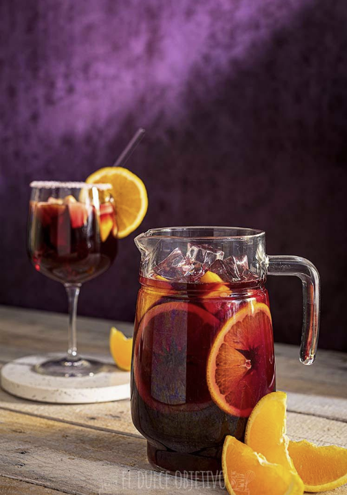

SANGRIA
Ingredientes:
- 750 ml de vino tinto.
- 600 ml de refresco de limón.
- 300 ml de refresco de cola.
- 80 gr. de azúcar.
- 1 melocotón.
- 1/2 manzana.
- 1/2 naranja.
- Cubitos de hielo para enfriar.
Preparación:
- Preferiblemente tener todos los ingredientes bien fríos para que el hielo no se derrita con mucha rapidez.
- Usar un recipiente grande para poder mezclar bien todos los ingredientes, aquí lo tradicional es hacerlo en barro.
- Lo primero que vamos a hacer es diluir el azúcar en el vino, moviendo bien. Cuidado, al poner el azúcar comenzará a salir espuma, mover bien para diluir y para que no se nos salga.
- Seguidamente ponemos los refrescos, el de limón y el de cola.
- Picamos la manzana y el melocotón en dados, no muy pequeños, pero que nos entren fácil en la boca. Del mismo como la naranja la podemos dejar en rodajas o en triángulos.
- Incorporamos la fruta a la bebida.
- Enfriar bien y llegado el momento de servir, hacerlo con abundante hielo.
